The Two Handed Backhand:¶
The Forward Swing
John Yandell
In the previous articles based on the high speed footage, we've looked at the preparation, the backswings, the hitting arm positions, and the stances on the two-handed backhand of the best players in the world. Now let's see what happens in the forward swing. Let's look at the critical moment of the contact point, and the relationship between the contact point, the followthrough, and then the wrap. Let's also focus on the key relationship between the contact point and the hitting arm positions.
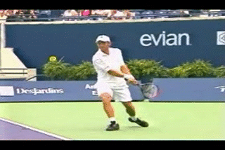
The forward swing: contact, finish, and wrap--but how are they related?
Start of the Swing
Despite the differences in the grip structures and the backswings, the high speed video shows that at the start of the forward swing, the top players have already established, or very quickly establish, their characteristic hitting arm positions. We've seen that there are actually 4 different hitting arm combinations in the pro game. These are with both arms straight, with both arms bent, with both arms flexed, and with the front arm bent and the rear arm straight.
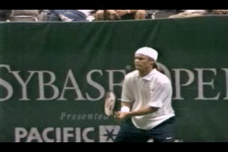
The hitting arm positions are independent of the shapes of the backswing.
We also saw that most pro women use the Bent/Bent combination, and that most pro men are Bent/Straight, although we can find variations, especially on the men's side. The key point to understand is that, regardless of which hitting arm combination a player uses, he or she sets up this position at the start of the forward swing, and then maintains it well out into the followthrough.
This means that common beliefs about "closing the racket face" or "dropping the wrists below the level of the ball" only make sense when we look at them in relation to the hitting arm structure. We have seen in a previous article how the hands and arms can rotate backward and/or forward as a unit as part of the overall swing pattern, but again, when players add this rotation they keep the basic hitting arm configuration in tact. (Click Here.)
Contact
So what do the differences in the hitting arms mean when we talk about the contact point, the most critical moment in the swing? Coaches and players spend a lot of time agonizing about whether the contact point on a certain ball was "early" or "in front" or "behind" or "late." A similar dialogue goes on about whether the player gets "too close" or is "too far away" from the ball at contact.
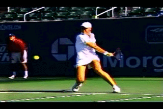
Four hitting arm positions, but how many contact points?
To a great extent I think this whole perspective is wasted energy and unproductive for both the player and the coach. Why? Because it tends to isolate the contact point, as if it was some kind of independent event floating detached from the rest of the swing. When we focus on the precise relationship of the hitting arms, the debate appears in a new light. This is because once the player sets up the hitting arm positions the distance away from the body both in the front and side directions will be in great part determined by the configuration of the arms.
The high speed video shows that the contact point is in part a consequence of the fundamental structure of the hitting arms. If the hitting arm positions are correct, this tend to lead naturally and automatically to the correct contact point. As the body rotation drives the shot, the hands, arms and racket come around as a unit. The other factor is the swing path and finish, as we'll see. But if those two are good, then the magic of great contact tends to more or less just happen.
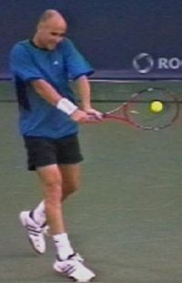
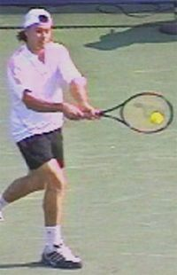
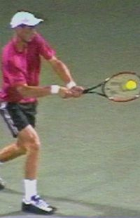
The structure of the hitting arms is a critical factor in establishing the contact point.
So creating great contact is not a matter of constantly trying to tweak the contact point itself to make it "a little more in front" or "a little further from the body"--or whatever. In fact, I would say that this approach undermines the integrity of the stroke, by encouraging players to try to make significant changes in the last split second before the hit. Creating great contact is largely a function of the other variables in the swing. If they are right you will develop a feel for the contact easily and naturally. Can players make subtle adjustments with the hitting arm structure to take the ball a little earlier or to compensate for their position to the ball ? Sure. But they do this while maintaining the underlying structure of the stroke. So let's take a close look at the contact point for each of our 4 combinations.
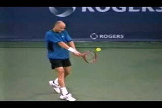
Straight/Straight moving through contact.
The Four Contact Points
The first hitting arm combination is what we called Straight/Straight. This means is that both the front arm and the back arm are extended and straight at the contact. Andre Agassi is one of the few top players that hits with this configuration. But, interestingly, recent Advanced Tennis filming shows another pretty good player who uses it as well: Rafael Nadal. (We can also see Nadal use other hitting arm configurations on some balls, but more on that another time.) Watch how the hitting arms move into the Straight/Straight position as Agassi comes out of the backswing and starts to move the racket forward to the contact. The arms stay straight at the contact point and beyond. Watch how Andre maintains the Straight/Straight position for multiple frames forward into the followthrough. There is tremendous extension of the swing here along the line of the shot.
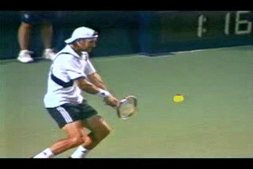
Bent/Straight moving through contact.
The second configuration is what we called Bent/Straight. This means the right arm is bent but the back arm is straight. It's probably the most common variation among the pro men. Lleyton Hewitt, David Nalbandian, and Nicholas Kiefer are some of the examples we can see in the footage.
Watching the backswings can be deceiving, because as we saw (Click Here), the shapes can vary tremendously and bear no necessary relationship to the position of the hitting arms at contact. Again watch the sequence. Regardless of the shape of the backswing, the players drop into the Bent/Straight position as the racket starts forward. Again see how the basic configuration stays the same at the contact and well out into the followthrough.
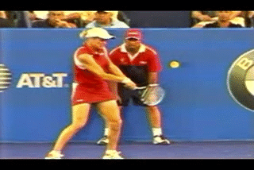
Bent/Bent moving through contact.
The most common hitting arm configuration for the top women's players is what we've called the Bent/Bent configuration. This means both arms are bent significantly, and the back arm is set up in a position very similar to the forehand. We see it in almost all of the top women like Kim Clijsters, Maria Sharapova, Lindsay Davenport, and Venus and Serena Williams, among others. It's rarer in the men but we still see it in top players. It was the configuration used by Goran Ivanisevic, and is currently used by top 10 Russian player Nikolay Davydenko. Watch the rear arm set up in the double bend position. This is similar to the forehand. It's highly likely that this variation has the most rear arm component of the 4 patterns. Again the Bent/Bent hitting position stays virtually unchanged well out into the followthrough.
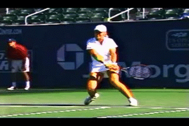
The Flex/Flex moving through the contact.
The final option we've called Flex/Flex. It's less common but you see some of the top players hit with this configuration: On the men's side, Marat Safin and Juan Carlos Ferrero both use it. Elena Dementieva is an example among the top women. The arms aren't fully straight, but they aren't nearly as bent as in the previous combination either. Probably there is a balance in the use of the front and back arm.The hitting arm position is set up as the player starts the forward swing. This configuration determines the position of the racket at the contact point. Like all the other hitting arm positions, the Flex configuration is also maintained after contact as the player continues the continuum of the swing and moves through the followthrough.
So what's the difference? The hitting arm positions might help determine the contact points, but you might assume that the different arm configurations could be correlated with significant or even slight differences in the exact position. For example, if both arms are straight, could you expect the contact point to be more to the side, further away from the body, that is, more to the player's left? Would you expect the variation with the both arms bent to be closer in? Would the Bent/Straight variation be closer in, but also possibly slightly more in front? Possibly, yes. Those were some of my working hypotheses, but I found them difficult to substantiate in the video.
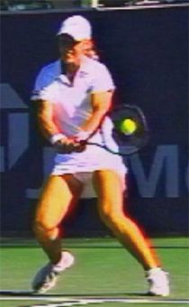
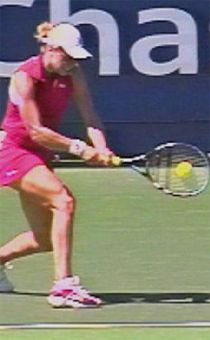
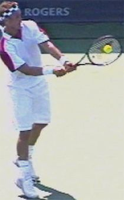
The hitting arms help to create the contact point--but we can see differences based on the exact arm configurations?
In the video there are simply too many differences in the ball height, the stances, the length of the arms of the players, and also the camera positions to really say for sure. If we could get one player to master and execute all 4 shapes on identical balls, then maybe we could tell with more certaintly. But that isn't going to happen. If we ever reach the point where we can do extensive live 3D analysis that would also be an interesting question to address.
So, are there relative advantages in leverage or possibly power? Again, difficult to speculate about for the same reasons. To really know we'd need players to be the master of several variations. Suffice it to say that Grand Slam tournaments have been won by players using all 4 configurations, so they all must have the potential to be highly effective. At this point probably the best we can say is that the various hitting arm positions are a matter of preference, or natural inclincation. Although the probabilities are that men and women are more likely to use certain variations, individual players have to experiment to determine which is natural for their own two-handers. Depending on which hitting arm style they choose, every player can then develop l his or her on personal contact point by setting up the hitting arm configuration and seeing how it moves through the swing.
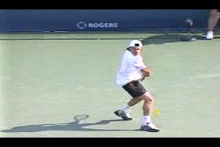
The contact point: the critical point on the continuum of the swing.
The Continuum of the Swing
Beyond the hitting arms themselves, however, there is one other factor to consider in understanding the contact point. This is the trajectory of the swing itself. The hands and arms need to be configured in the correct shape. But they also need to be moving along the correct path. This is where the followthrough is critical.
It's been argued that the followthrough is irrelevant to the tennis swing, because the ball is already off the racket. I think that's crazy. The path of the swing is a continuum that starts with the forward motion to the ball. It doesn't end with the contact. The contact point is just one point on that continuum. And the overall path of that continuum--in conjunction with the hitting arm structure--is what determines the position of the racket at the contact. Put another way, the contact is also a direct function of the shape the swing path. And the shape of the swing path is dependent on the followthrough. Where the racket is headed determines where it is going at any given moment, including the most critical moment when it actually strikes the ball.
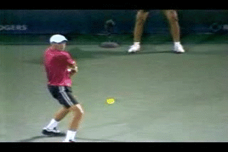
The shape of the swing path depends on the followthrough.
So in addition to the role of the hitting arms, the contact point has to be understood and developed in the context of the overall motion. Interestingly, despite the differences in the hitting arms, the finish points for all the variations can be quite similar. This is where a lot of the confusion regarding the two-hander actually begins. It's very hard to distinguish the differences in the various hitting arm positions by looking at the finish positions. Typically the players all reach some point with the hands around eye level and with the edge of the racket in line with or close to in line with the edge of the opposite shoulder. If the player is using a lot of hand and arm rotation, the position can sometimes be further across and a little lower with the face of the racket somewhat turned over and down.
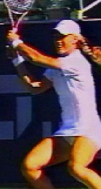
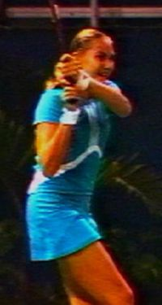
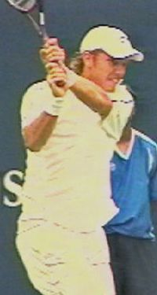
The similar finish for the different hitting arm structures can cause confusion.
The most interesting point is the change in shape of the hitting arm configuration itself. Regardless of whether the arms were straight or bent at contact, by the time they reach the finish point, the left front arm is relaxed and bend at an angle of about 45 degrees or more. The right rear arm is also bent or at least flexed, again at an angle of up to about 45 degrees. Because the racket is going slower at the finish than during the few split seconds around the contact point, this positioning is easier to see with the naked eye than the different combinations of arm positions players are actually using at the hit.
What is the Finish?
As we did with the forehand (Click Here) we are defining the finish point or the end of the followthrough as the last point in which the racket is moving either outward or upward, before it starts to move backwards and down in the opposite direction of the hit. This motion backwards and downwards is the "wrap" or the final deceleration phase of the motion. Some coaches or analysts don't distinguish between the followthrough and the wrap and consider both to be part of the finish of the stroke. That's definitely true, at least in one sense, because both are points on that one long, continuous motion we call the tennis swing.
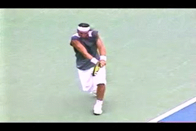
The wrap is the natural consequence of a good finish.
There is no doubt that a good finish and a good wrap go together, and you can't have, or shouldn't have, one without the other. The racket needs to decelerate smoothly and evenly and the wrap allows that process to reach completion. The "wrap" also isn't unique to the modern game, as we saw in our analysis of the forehand. It's been common to all good players going back about 100 years. In fact the wrap of Big Bill Tilden's classic eastern forehand looks virtually identical to that of Pete Sampras.
The key point is not to over emphasize the wrap so much that players don't reach the finish. We saw that this was unfortunately quite common on the forehand in junior tennis (Click Here.) It's the same issue on the two-handed backhand, and like the forehand, not just a problem for junior players. You can usually tell players who have been taught to finish the stroke by "wrapping." They look awkward and mechanical. If you video their swings, they tend to cut the extension of the motion short, miss the finish and go immediately up over their shoulder. The result in my view is loss of depth and pace, as well as increased inconsistency.
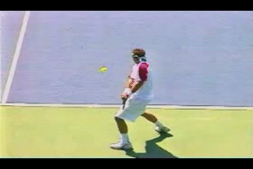
One major key to the pro two-hander is the extension at the finish point.
Just to be clear, since the issue is so controversial, yes there is a wrap. Yes players should wrap. What I am saying is that I think it is a mistake to define the wrap as the finish of the forward swing. Instead I think players should focus on making the finish position and then relaxing and letting the wrap happen. Once again the video tells all. If players look stiff or rigid, you can encourage them to relax and let the racket go, and even show them how the wrap flows from the finish. But when I film players at all levels, what I see more commonly is a big, exaggerated wrap without the same great extension as the top players.

So that takes us all the way through the complexities and the commonalities on the two-handed backhand. In the future we'll do a summary article about how to put your two-hander together. In the next article, we'll also take a look about what our framework can show us about the two-hander of one top player whose backhand has been widely criticized: Andy Roddick.
John Yandell is widely acknowledged as one of the leading videographers and students of the modern game of professional tennis. His high speed filming for Advanced Tennis and Tennisplayer have provided new visual resources that have changed the way the game is studied and understood by both players and coaches. He has done personal video analysis for hundreds of high level competitive players, including Justine Henin-Hardenne, Taylor Dent and John McEnroe, among others.
In addition to his role as Editor of Tennisplayer he is the author of the critically acclaimed book Visual Tennis. The John Yandell Tennis School is located in San Francisco, California.